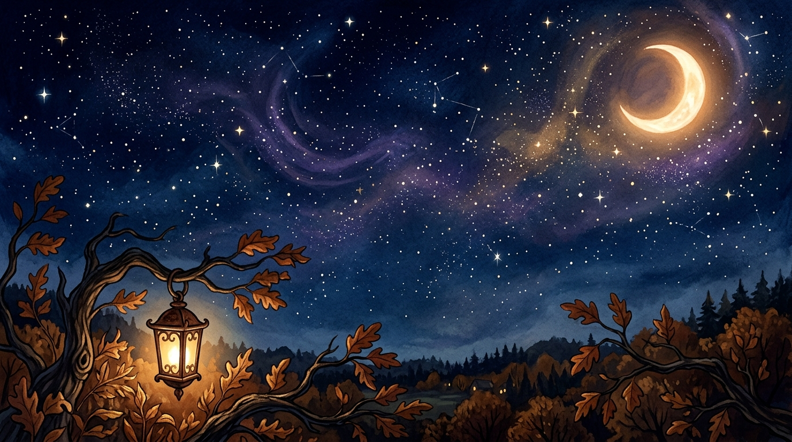
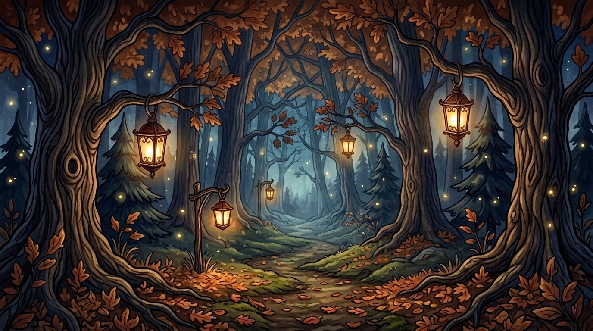
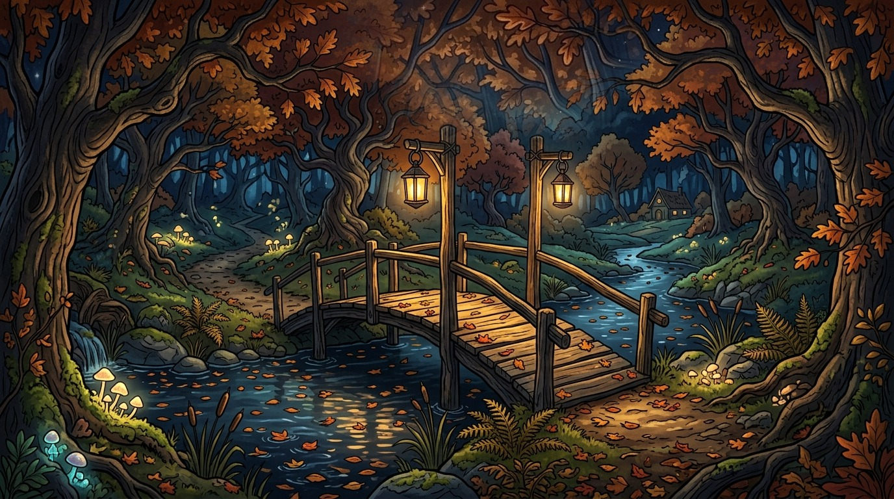
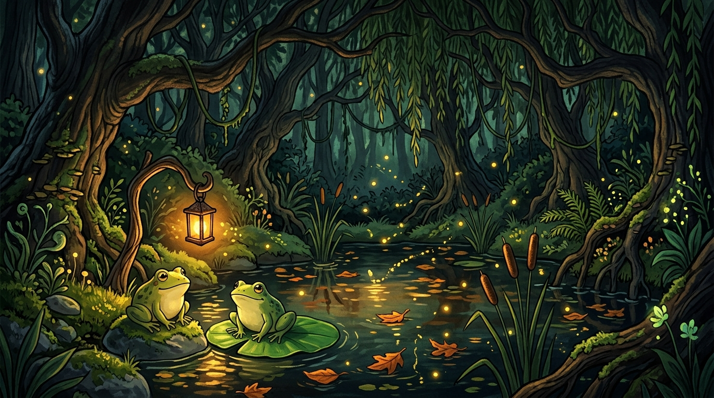
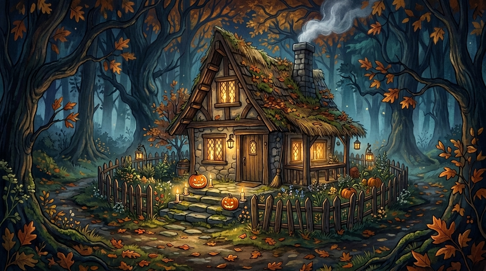
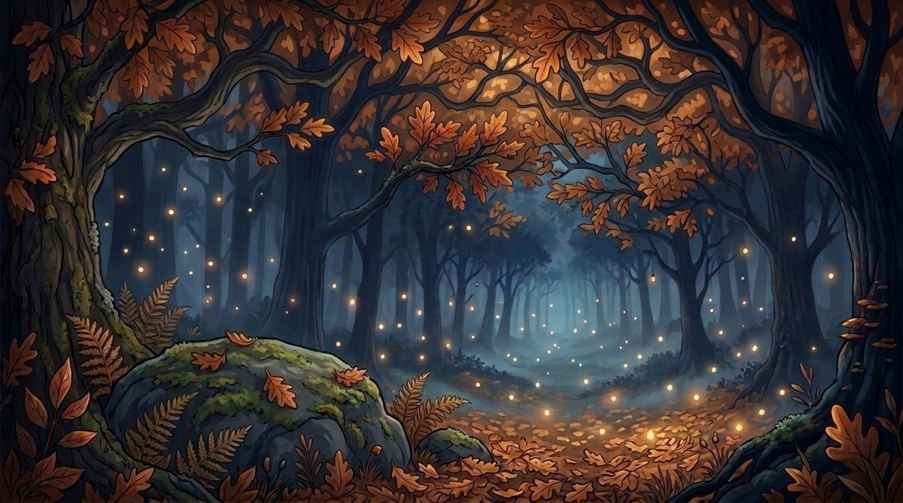

[ Kleines Rätsel zum Start ]
Bevor die Sterne unsere Geschichte erzählen...
Beantworte die 5 Fragen, um dein Sternbild Krebs zu verbinden:
Stern 1 von 5
Lädt...
[ 30. Oktober 2026 • 1. Jahrestag ]
Ein Jahr wir zwei.
Tausende Kilometer, doch so nah.
Während du unter Palmen in Brasilien bist und ich im kalten deutschen Herbstregen sitze: Keine Distanz im Universum trennt, was zusammengehört.
DE
Oldenburg
--:--
53.1° N
-- km
≈ 0.00 ms Lichtzeit
BR
João Pessoa
--:--
7.1° S
Scrolle weiter zu unserem Rückblick


Unsere Frösche am Waldteich
Lichter in der Herbstnacht
[ Unser erstes gemeinsames Jahr ]
Von unserem ersten Treffen in Vechta bis zu deinem Semester in Brasilien — was wir in einem Jahr alles zusammen erlebt haben.
Von gemeinsamen Klausurenphasen über unser Alpenabenteuer und Spanien bis hin zu unseren langen Brasilien-Telefonaten — hier sind unsere Erinnerungen aus den letzten zwölf Monaten.

HerbstzeitCountdown bis zu unserem Wiedersehen in Brasilien:
--
--
--
--
Nicht mehr lange, bis ich im Flieger nach Brasilien sitze und wir uns endlich wiedersehen!
Zum ersten Jahrestag
30. Oktober 2026
Dein Jona